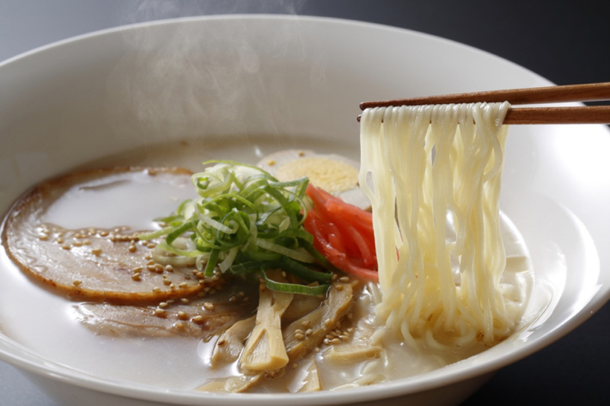

Hakata Ramen
「博多ラーメン — The refinement of Fukuoka's tonkotsu perfection.」
Hakata Ramen is famous for its creamy pork broth and ultra-thin noodles. Originating from the Hakata district in Fukuoka, it offers a cleaner flavor than Kurume, with a rich pork character.
Ingredients
- Long-simmered pork bone broth
- Thin, straight noodles
- Chashu, scallions, pickled ginger and grated garlic
Flavor
Creamy and salty with deep pork notes.
Scent
Warm, rich and enveloping.
Texture
Silky and smooth, with noodles that soak up the broth perfectly.